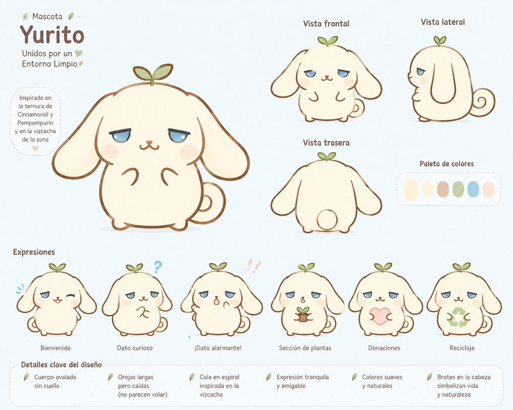

Pequeñas acciones pueden proteger nuestra naturaleza, nuestra comunidad y el lugar que llamamos hogar.
Conoce nuestro entorno 🌿 Únete 💚Somos un proyecto que busca promover el cuidado de nuestro entorno y crear conciencia sobre la importancia de proteger la naturaleza de nuestra comunidad.
🌱 Creemos que cada persona puede contribuir mediante pequeñas acciones que, juntas, pueden generar un cambio positivo.
Unidos por un Entorno Limpio es una iniciativa de sensibilización ambiental enfocada en conocer, valorar y proteger nuestro entorno.
A través de información, consejos y recursos interactivos buscamos que más personas conozcan la importancia de cuidar nuestros ecosistemas, plantas y recursos naturales.
🌎 Conocer → Valorar → Proteger
Yura posee paisajes, plantas y ecosistemas que forman parte de nuestra identidad. Aunque vivimos en una zona donde el agua es un recurso muy importante, la naturaleza se ha adaptado de maneras sorprendentes.
Nuestra zona posee especies vegetales capaces de sobrevivir en condiciones secas y con poca disponibilidad de agua.
Cuidar el agua también significa cuidar los suelos, las plantas, los animales y a las personas.
Proteger nuestro entorno empieza por conocerlo, valorarlo y participar activamente en su cuidado.
Algunas plantas que crecen en zonas áridas pueden parecer simples, pero cumplen funciones importantes dentro del ecosistema.
La Encelia farinosa es una planta adaptada a ambientes áridos. Sus características le permiten sobrevivir donde otras especies tendrían dificultades.
Conocer las especies de nuestro entorno nos ayuda a comprender por qué es importante evitar la destrucción innecesaria de la vegetación.
🌱 Conocer → Valorar → Proteger
Quemar vegetación puede afectar plantas, animales, suelo y calidad del aire.
Los residuos abandonados pueden permanecer durante mucho tiempo en el ambiente y afectar a otros seres vivos.
No arrancar ni destruir plantas innecesariamente es una forma sencilla de cuidar nuestro entorno.
Utilicemos el agua de manera responsable, especialmente en zonas donde este recurso es limitado.
No necesitamos hacer algo enorme para comenzar. Podemos empezar con una acción pequeña: no tirar basura, cuidar una planta, ahorrar agua o enseñar a alguien más a proteger nuestro entorno.